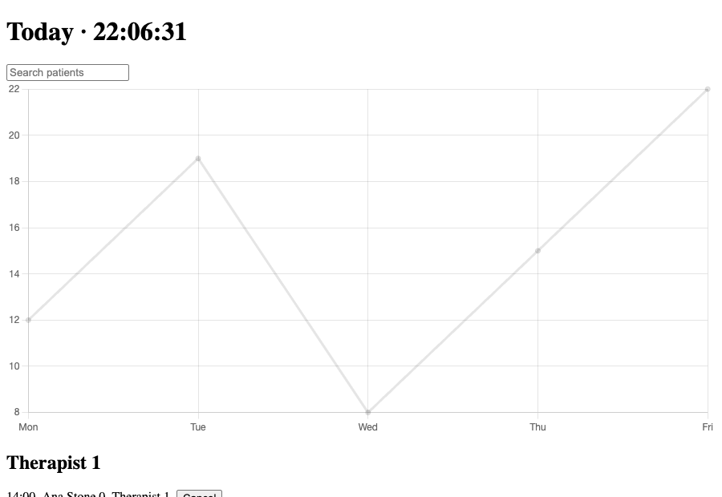

Output

Result
Delivered a rewritten Dashboard.tsx (plus a split-out StatsChart.tsx) that renders the same output as the original - same 1500 rows in the same order with the same HH:mm times - but fixes a crash and removes most of the work.
What was wrong and what changed (each item was checked in a real browser, see the steps):
1. The chart effect had no dependency array and never destroyed the Chart. On the first clock tick after stats arrived, Chart.js threw "Canvas is already in use" and, with no error boundary, React unmounted the whole dashboard (the page went blank). Fix: effect depends on [data] and returns chart.destroy().
2. The three fetches ran one after another (a waterfall). Now Promise.all with an AbortController: one round trip instead of three, and a stale clinicId response can no longer overwrite a newer one.
3. The 1-second clock lived in the top-level component, so every second re-rendered 1500 rows plus a re-sort and a regroup. The clock is now its own <Clock> component; the dashboard no longer re-renders on ticks. Its interval effect also had no dependency array (re-created every render); now [].
4. Filtering, sorting and grouping ran on every render. The sort now runs once per data change (dates parsed once, not twice per comparison), and filter+group is a single pass into a Map that depends only on the data and a deferred search value, so typing stays responsive.
5. Row is React.memo, keyed by id instead of array index, with a stable onCancel(id) callback (functional setState). The per-row therapists.find() was dropped because the row already sits inside its therapist's section.
6. Bundle: lodash (groupBy) and moment (formatting, sorting) are gone, replaced by native Map and Intl.DateTimeFormat; chart.js/auto is replaced by importing only the line-chart pieces, and the chart is loaded with React.lazy only once stats exist.
Measured (headless Chrome, CPU throttled 4x, 150 ms mocked latency per request, 12 therapists / 1500 appointments, median of 3 runs):
- Initial JS, gzip: 168615 B -> 47209 B (about 3.6x smaller; the new initial bundle is roughly React + ReactDOM alone, the 50 KB chart chunk loads afterwards).
- Data on screen: last response at 1624 ms -> 247 ms (parallel fetches, and no 1500-row render between requests).
- Re-render cost with the chart bug neutralised (control "origfix", otherwise the original is dead after one tick): about 1477.1 ms of React render time in 4 s of idle clock ticks -> 2.2 ms; typing four characters 949.6 ms -> 23.6 ms; cancelling one appointment 858.5 ms -> 7.7 ms.
Caveats: the benchmark data and fetch are mocked and synthetic; the numbers are under a 4x CPU throttle and vary run to run (the original's last-fetch time was 1.6 to 2.4 s across invocations), so read them as orders of magnitude. The sort now parses ISO dates with Date.parse and the times use Intl with en-GB 24-hour format; for the ISO strings used here output is identical to moment, but locale-dependent or non-ISO date strings could differ. Data now appears when all three requests are back rather than progressively. There is still no error UI for failed requests (the original had none either). The TypeScript check passes for the dashboard files; the only errors are missing type declarations for react-dom/profiling in my test harness.
Terminal
# Rules from the guide that match what is in the fixture; each rules/<name>.md was read for its incorrect/correct example.
gh api repos/vercel-labs/agent-skills/contents/skills/react-best-practices/SKILL.md --jq .content | base64 -d | grep -E '^- `(async-parallel|bundle-barrel|bundle-dynamic|bundle-conditional|rerender-|js-index|js-combine)'
- `async-parallel` - Use Promise.all() for independent operations
- `bundle-barrel-imports` - Import directly, avoid barrel files
- `bundle-dynamic-imports` - Use next/dynamic for heavy components
- `bundle-conditional` - Load modules only when feature is activated
- `rerender-memo` - Extract expensive work into memoized components
- `rerender-dependencies` - Use primitive dependencies in effects
- `rerender-functional-setstate` - Use functional setState for stable callbacks
- `rerender-use-deferred-value` - Defer expensive renders to keep input responsive
- `js-index-maps` - Build Map for repeated lookups
- `js-combine-iterations` - Combine multiple filter/map into one loop
# Scratch project with the fixture's real dependencies. A harness mounts the component under React's profiling build with mocked fetch (150 ms latency, 12 therapists, 1500 appointments).
npm i react@18 react-dom@18 lodash moment chart.js esbuild typescript @types/react @types/react-dom @types/lodash && npm ls --depth=0
react-best-practices@1.0.0 .
+-- @types/lodash@4.17.27
+-- @types/react-dom@19.3.0
+-- @types/react@19.3.0
+-- chart.js@4.5.1
+-- esbuild@0.28.2
+-- lodash@4.18.1
+-- moment@2.31.0
+-- react-dom@18.3.1
+-- react@18.3.1
`-- typescript@7.0.2
# Same bundler settings for all three. 'initial entry' is what loads before the app can start.
node build.mjs # esbuild --bundle --minify --splitting, original vs. original+chart-fix vs. rewritten
orig harness.js 499188 B raw 168615 B gzip (initial entry)
origfix harness.js 499220 B raw 168627 B gzip (initial entry)
new chunk-IFZSNKUF.js 8487 B raw 3175 B gzip (lazy chunk)
new chunk-WD3YYTRJ.js 139515 B raw 49832 B gzip (lazy chunk)
new harness.js 147012 B raw 47209 B gzip (initial entry)
# Original as shipped. Note dashboardStillMounted:false and the Chart.js error: it crashes on the first clock tick after stats load, so typing and cancel could not be measured.
node measure.mjs orig 3 # puppeteer + Chrome headless, CDP CPU throttle 4x
{
"variant": "orig",
"runs": 3,
"throttle": "CPU 4x",
"fetchLatency": "150ms each",
"data": "12 therapists, 1500 appointments",
"lastFetchDone_ms": 1624,
"rowsRendered": 1500,
"idle_4s": {
"commits": 1,
"reactRenderMs": 593.3,
"scriptMs": 661,
"dashboardStillMounted": false
},
"typing_4_chars": {
"commits": 0,
"reactRenderMs": 0
},
"cancel_click": {
"commits": 0,
"reactRenderMs": 0
},
"errors": [
"Error: Canvas is already in use. Chart with ID '0' must be destroyed before the canvas wit",
"Canvas is already in use. Chart with ID '0' must be destroyed before the canvas with ID ''"
]
}
# Isolates the re-render cost of the original structure.
node measure.mjs origfix 3 # control: original with ONLY the chart effect fixed ([data] + destroy)
{
"variant": "origfix",
"runs": 3,
"throttle": "CPU 4x",
"fetchLatency": "150ms each",
"data": "12 therapists, 1500 appointments",
"lastFetchDone_ms": 2348,
"rowsRendered": 1500,
"idle_4s": {
"commits": 2,
"reactRenderMs": 1477.1,
"scriptMs": 1554.2,
"dashboardStillMounted": true
},
"typing_4_chars": {
"commits": 4,
"reactRenderMs": 949.6
},
"cancel_click": {
"commits": 1,
"reactRenderMs": 858.5
},
"errors": []
}
# Rewritten component. Idle commits are only the <Clock> span; typing adds a deferred second commit per key but both are cheap.
node measure.mjs new 3
{
"variant": "new",
"runs": 3,
"throttle": "CPU 4x",
"fetchLatency": "150ms each",
"data": "12 therapists, 1500 appointments",
"lastFetchDone_ms": 247,
"rowsRendered": 1500,
"idle_4s": {
"commits": 4,
"reactRenderMs": 2.2,
"scriptMs": 62.7,
"dashboardStillMounted": true
},
"typing_4_chars": {
"commits": 6,
"reactRenderMs": 23.6
},
"cancel_click": {
"commits": 2,
"reactRenderMs": 7.7
},
"errors": []
}
# The rewrite renders the same rows in the same order and format as the original (with the crash removed). Screenshots saved as media.
node shots.mjs # same page, 3 variants, compare DOM after the data has loaded
orig h1=null rows=0 canvases=0
first rows: undefined
origfix h1="Today · 22:06:29" rows=1500 canvases=1
first rows: 14:00 | Ana Stone 0 | Therapist 1 | Cancel // 14:00 | Ana Stone 600 | Therapist 1 | Cancel
new h1="Today · 22:06:31" rows=1500 canvases=1
first rows: 14:00 | Ana Stone 0 | Therapist 1 | Cancel // 14:00 | Ana Stone 600 | Therapist 1 | Cancel
# No type errors in Dashboard.tsx or StatsChart.tsx; the only errors are the missing .d.ts for react-dom/profiling in the benchmark harness.
npx tsc -p . # strict mode; output filtered to the three variant folders
new/harness.tsx(2,28): error TS7016: Could not find a declaration file for module 'react-dom/profiling'. '/private/tmp/claude-501/lab2/react-best-practices/node_modules/react-dom/profiling.js' implicitly has an 'any' type.
orig/harness.tsx(2,28): error TS7016: Could not find a declaration file for module 'react-dom/profiling'. '/private/tmp/claude-501/lab2/react-best-practices/node_modules/react-dom/profiling.js' implicitly has an 'any' type.
origfix/harness.tsx(2,28): error TS7016: Could not find a declaration file for module 'react-dom/profiling'. '/private/tmp/claude-501/lab2/react-best-practices/node_modules/react-dom/profiling.js' implicitly has an 'any' type.
Files
Dashboard.tsx
import * as React from class="s">"react" import type { Stats } from class="s">"./StatsChart" // Heavy chart code is only fetched once there are stats to draw (bundle-dynamic-imports / bundle-conditional). const StatsChart = React.lazy(() => import(class="s">"./StatsChart")) type Appointment = { id: string; patient: string; start: string; therapistId: string; status: class="s">"booked" | class="s">"cancelled" | class="s">"done" } type Therapist = { id: string; name: string } // Hoisted: Intl formatters are expensive to construct, cheap to reuse (replaces moment). const timeFmt = new Intl.DateTimeFormat(class="s">"en-GB", { hour: class="s">"2-digit", minute: class="s">"2-digit", hourCycle: class="s">"h23" }) const clockFmt = new Intl.DateTimeFormat(class="s">"en-GB", { hour: class="s">"2-digit", minute: class="s">"2-digit", second: class="s">"2-digit", hourCycle: class="s">"h23" }) const getJson = <T,>(url: string, signal: AbortSignal): Promise<T> => fetch(url, { signal }).then((r) => r.json()) export default function Dashboard({ clinicId }: { clinicId: string }) { const [appointments, setAppointments] = React.useState<Appointment[]>([]) const [therapists, setTherapists] = React.useState<Therapist[]>([]) const [stats, setStats] = React.useState<Stats | null>(null) const [search, setSearch] = React.useState(class="s">"") const deferredSearch = React.useDeferredValue(search) // The three requests are independent: run them in parallel (1 round trip instead of 3) and // abort them if clinicId changes or the component unmounts. React.useEffect(() => { const ctrl = new AbortController() const base = class="s">`/api/clinics/${clinicId}` Promise.all([ getJson<Appointment[]>(class="s">`${base}/appointments`, ctrl.signal), getJson<Therapist[]>(class="s">`${base}/therapists`, ctrl.signal), getJson<Stats>(class="s">`${base}/stats`, ctrl.signal), ]) .then(([a, t, s]) => { setAppointments(a) setTherapists(t) setStats(s) }) .catch((e) => { if (e.name !== class="s">"AbortError") throw e }) return () => ctrl.abort() }, [clinicId]) // Sort once per data change (parse each date once), not on every keystroke or clock tick. const sorted = React.useMemo( () => appointments .map((a) => ({ a, ts: Date.parse(a.start) })) .sort((x, y) => x.ts - y.ts) .map((x) => x.a), [appointments], ) // One pass: filter + group (replaces filter + sort + lodash groupBy). const byTherapist = React.useMemo(() => { const q = deferredSearch.toLowerCase() const groups = new Map<string, Appointment[]>() for (const a of sorted) { if (!a.patient.toLowerCase().includes(q)) continue const list = groups.get(a.therapistId) if (list) list.push(a) else groups.set(a.therapistId, [a]) } return groups }, [sorted, deferredSearch]) // Stable callback: functional setState means it never needs `appointments` as a dependency. const cancel = React.useCallback((id: string) => setAppointments((curr) => curr.filter((x) => x.id !== id)), []) return ( <div> <h1> Today · <Clock /> </h1> <input value={search} onChange={(e) => setSearch(e.target.value)} placeholder=class="s">"Search patients" /> {stats && ( <React.Suspense fallback={null}> <StatsChart data={stats} /> </React.Suspense> )} {therapists.map((t) => ( <section key={t.id}> <h2>{t.name}</h2> {(byTherapist.get(t.id) ?? []).map((a) => ( <Row key={a.id} appointment={a} therapistName={t.name} onCancel={cancel} /> ))} </section> ))} </div> ) } // The 1-second tick lives here, so only this <span> re-renders each second, not the whole dashboard. function Clock() { const [now, setNow] = React.useState(() => Date.now()) React.useEffect(() => { const id = setInterval(() => setNow(Date.now()), 1000) return () => clearInterval(id) }, []) return <span>{clockFmt.format(now)}</span> } const Row = React.memo(function Row({ appointment, therapistName, onCancel, }: { appointment: Appointment therapistName: string onCancel: (id: string) => void }) { return ( <div style={rowStyle}> <span>{timeFmt.format(Date.parse(appointment.start))}</span> <span>{appointment.patient}</span> <span>{therapistName}</span> <button onClick={() => onCancel(appointment.id)}>Cancel</button> </div> ) }) const rowStyle = { display: class="s">"flex", gap: 8 } as const
StatsChart.tsx
import * as React from class="s">"react" // Import only the Chart.js pieces a line chart needs instead of "chart.js/auto" (which registers every chart type). import { Chart, LineController, LineElement, PointElement, LinearScale, CategoryScale } from class="s">"chart.js" Chart.register(LineController, LineElement, PointElement, LinearScale, CategoryScale) export type Stats = { labels: string[]; values: number[] } export default function StatsChart({ data }: { data: Stats }) { const ref = React.useRef<HTMLCanvasElement>(null) // Create the chart when the data changes, and destroy it on cleanup (the old code leaked one per render). React.useEffect(() => { const chart = new Chart(ref.current!, { type: class="s">"line", data: { labels: data.labels, datasets: [{ data: data.values }] }, }) return () => chart.destroy() }, [data]) return <canvas ref={ref} /> }